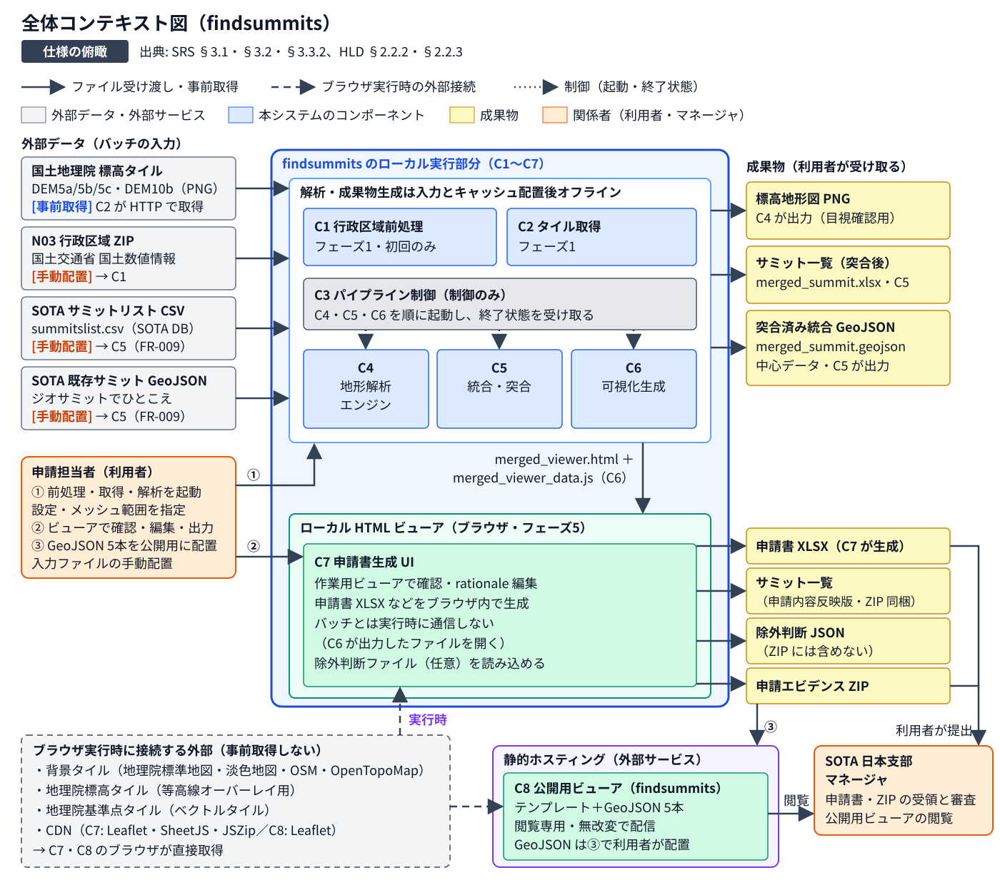
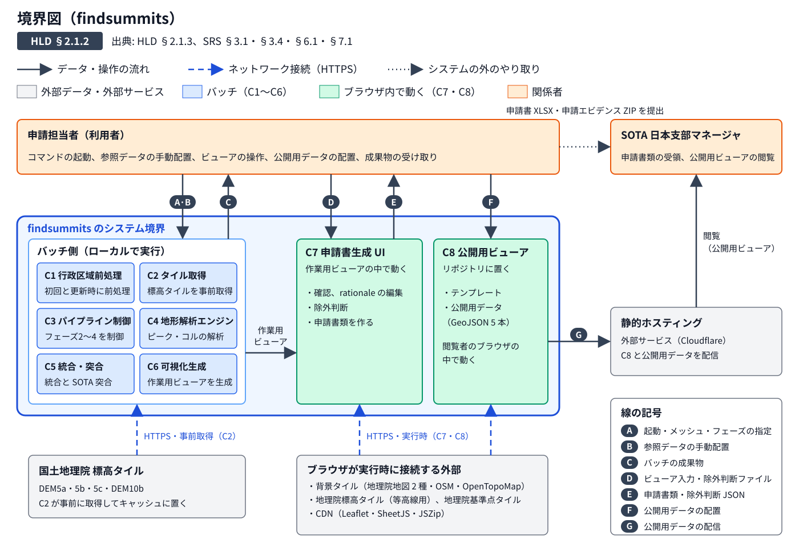
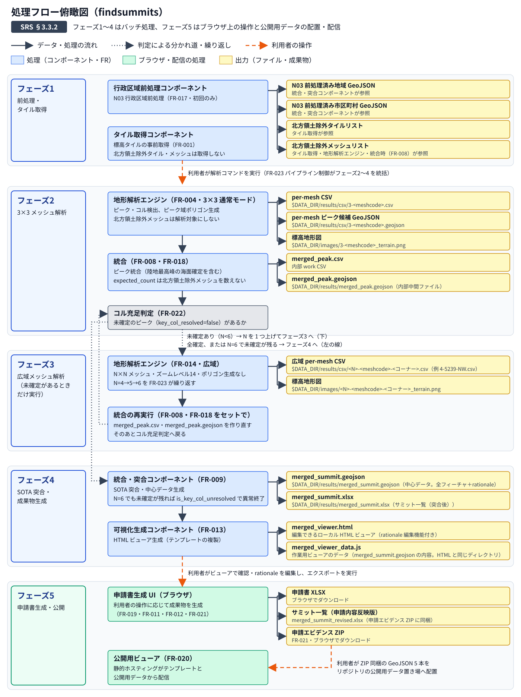
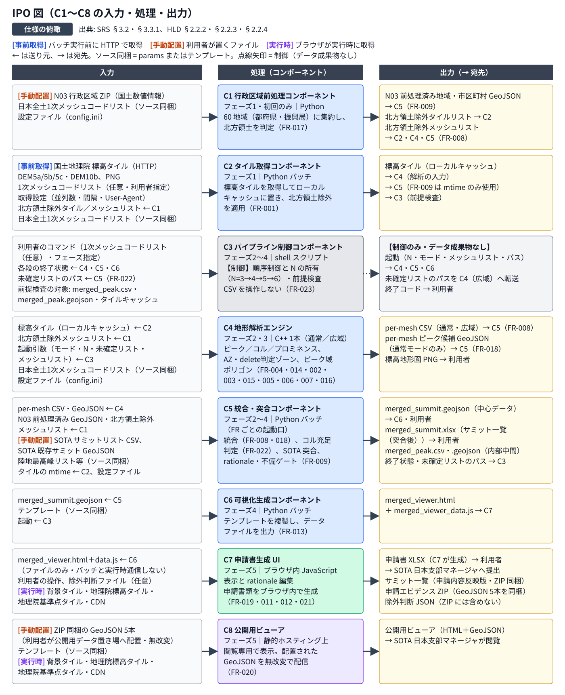
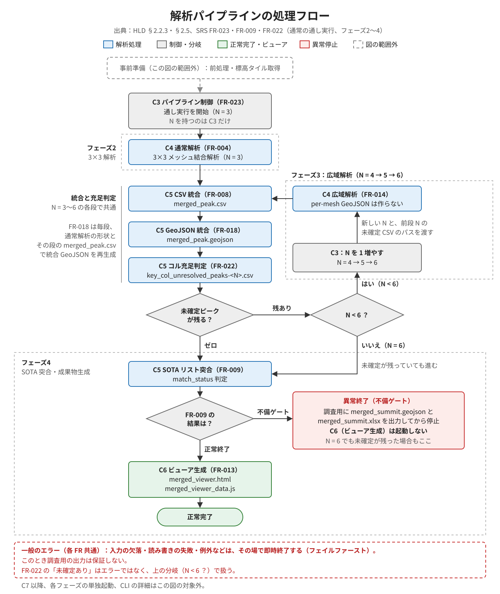
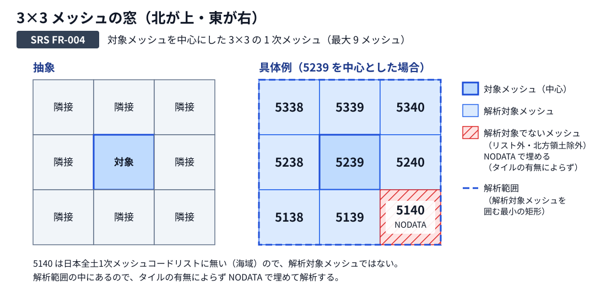
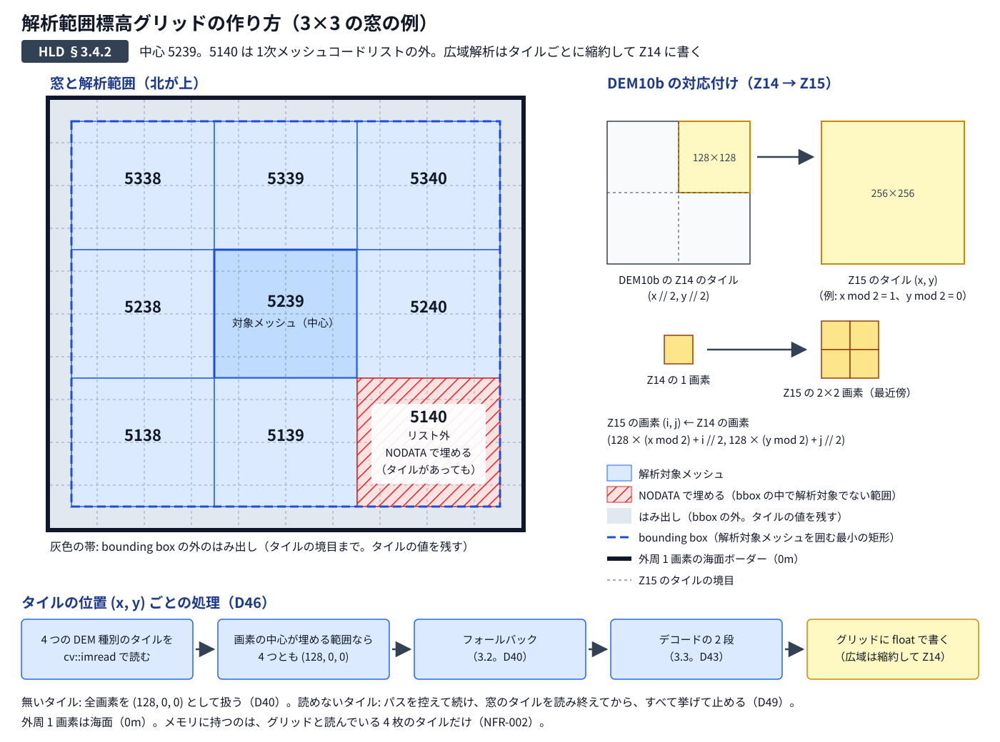
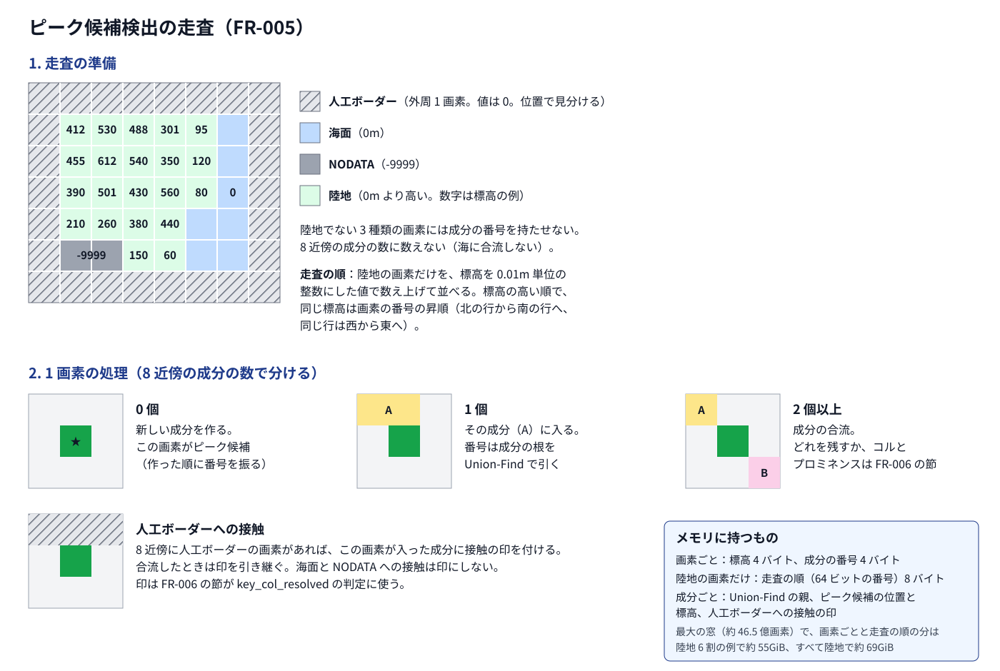
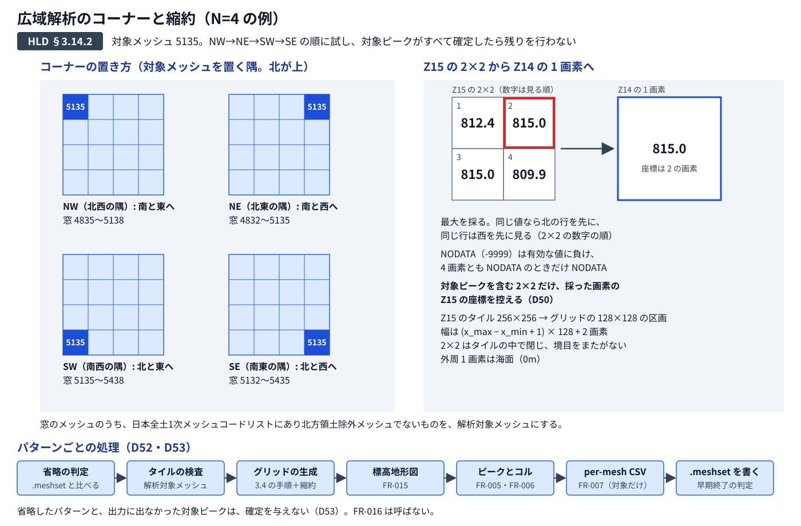
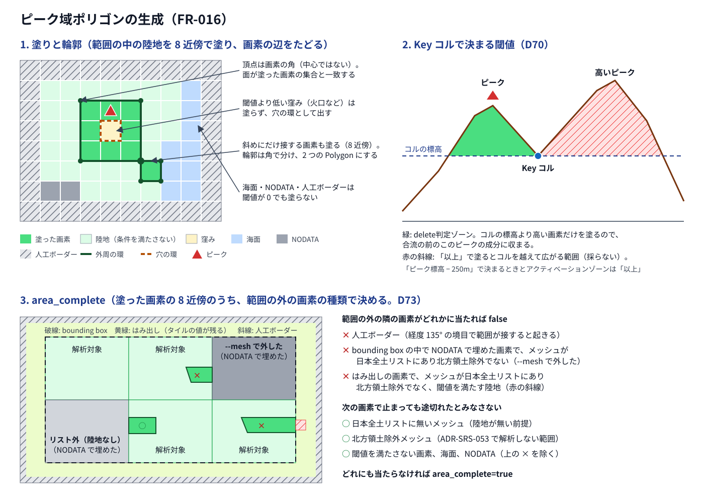

findsummits — 全体像・入出力・処理フロー
標高タイルと既存サミットの情報から解析・確認を経て、申請書類と公開用データを作るまでの関係を示します。図をクリックすると SVG を開いて拡大できます。
仕様の詳細は SRS と HLD の本文を参照してください。図は主要な関係の要約です。HLD の実行形態は設計を表し、現行プロトタイプの実装とは異なる場合があります。
全体コンテキスト図

出典: SRS §3.1〜3.3、HLD §2.2.2〜2.2.3。実線はファイル等の受け渡し、破線はブラウザの実行時接続、点線は制御です。コンポーネント間の詳細なデータ経路は省略しています。
境界図

出典: HLD §2.1.2〜2.1.3。実線はデータ・操作の流れ、青の破線はネットワーク接続、点線はシステムの外のやり取りです。A〜G の詳しい内容と外部要素ごとの接続は HLD の本文を参照してください。
処理フロー俯瞰図

出典: SRS §3.3。実線はデータ・処理の流れ、点線は判定による分かれ道と繰り返し、橙の破線は利用者の操作です。各ファイルの仕様は SRS の本文を参照してください。
コンポーネント別 IPO 図

出典: SRS §3.2〜3.3、HLD §2.2.2〜2.2.4。C3 は処理の起動・終了状態を扱います。再解析のループ、不備ゲート、ブラウザ内の状態や入出力の詳細条件は本文を参照してください。
解析パイプラインの処理フロー

出典: HLD §2.2.3・§2.5、SRS FR-023・FR-009・FR-022。通常の通し実行（フェーズ2〜4）を示します。前処理・タイル取得、各フェーズの単独起動、ブラウザ側の操作は図の範囲外です。
未確定が N=6 まで残った場合も SOTA 突合へ進み、調査用の GeoJSON と XLSX を出力して不備ゲートで停止します。ビューア生成を起動するのは突合が正常終了した場合だけです。一般の入力欠落や例外時には調査用の出力を保証しません。
3×3 メッシュの窓

出典: SRS FR-004、HLD §3.4.2（D47）、ADR-SRS-053。解析範囲標高グリッドの作り方の詳細は、次の図です。
解析範囲標高グリッドの作り方

出典: HLD §3.4.2、SRS FR-004・FR-002・FR-003、ADR-SRS-053・ADR-SRS-061。3×3 の窓の例です。広域解析も同じ手順でタイルの位置ごとに標高を求め、縮約してから Z14 のグリッドに書きます（Z15 の結合画像全体は作りません）。
ピーク候補検出の走査

出典: HLD §3.5.2、SRS FR-005・FR-006、ADR-SRS-053。グリッドの標高の数字は例です。合流でどの成分を残すか、コルとプロミネンスは FR-006 の節で決めます。
広域解析のコーナーと縮約

出典: HLD §3.14.2、SRS FR-014、ADR-SRS-004・ADR-SRS-046・ADR-SRS-055。N=4、対象メッシュ 5135 の例です。窓の範囲は ADR-SRS-004 の例と同じです。
ピーク域ポリゴンの生成

出典: HLD §3.16.2、SRS FR-016、ADR-SRS-011・ADR-SRS-053。グリッドと地形の形は例で、色と記号は説明用です（出力のスタイルは HLD §3.16.2 の表）。輪郭の辺のつなぎ方の細部は LLD で決めます。
サミット一覧（申請内容反映版）は申請エビデンス ZIP に同梱します。公開用ビューアは同じ ZIP から取り出した GeoJSON 5 本を利用者が無改変で配置して配信します。